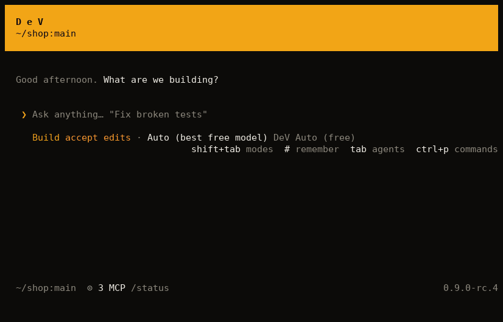

DeV Code is a coding agent for your terminal. It gives every developer the premium features that usually sit behind a paid plan, with nothing to pay and no card to add.
curl -fsSL https://harsha-code-per.github.io/DeV/install | shUsing Windows? See the install guide.

A student, a freelancer and a team on a tight budget deserve the same tools as anyone else. We're building DeV so that nobody is held back by a subscription. Everything we build goes to everyone, free.
For larger work, DeV reads the code and writes a plan first. Nothing changes until you say yes.
Ask it to keep going until the tests pass. It keeps working, and an independent reviewer checks the result before the goal ends.
Before saying a task is done, DeV runs your tests or build and reports the real result. Every finished task ends in a receipt.
Hand parts of a task to focused helpers that work in parallel, including in the background.
Go back to any earlier message and restore both the conversation and your files.
On Linux and macOS, shell commands run in an OS sandbox. They can't read your SSH keys or cloud credentials.
Small fixes start straight away. Bigger work gets a plan. You can override it at any time with Shift+Tab.
DeV remembers how your project works across sessions, in a file you can read and edit.
Skills, plugins, hooks, custom agents and MCP servers are all included, with no tier to unlock them.
We test DeV on real coding tasks with hidden tests it never sees. It passes 25 of 30 at no cost, and the tasks and results are published.
Every release is installed on clean Linux, macOS and Windows machines before you see it.
DeV Code is MIT licensed, so you can read it, change it and use it in your commercial work.
dev, then /connect, and pick from the free options at the top of the list.Chat and coding in one app for Windows, macOS and Linux, sharing your sessions with the terminal.
An assistant in your browser that works with your other DeV apps.
Your settings and connected models follow you across devices, end-to-end encrypted.